GitHub地址：GitHub - lm-sys/FastChat
GitHub介绍：An open platform for training, serving, and evaluating large language models. Release repo for Vicuna and Chatbot Arena.
这里简单体验一下
注意：如果没有特殊说明，运行环境还是我的老朋友，对，还是没有GPU啊！咱就是这么顽固，只靠CPU……
这个比较简单，直接
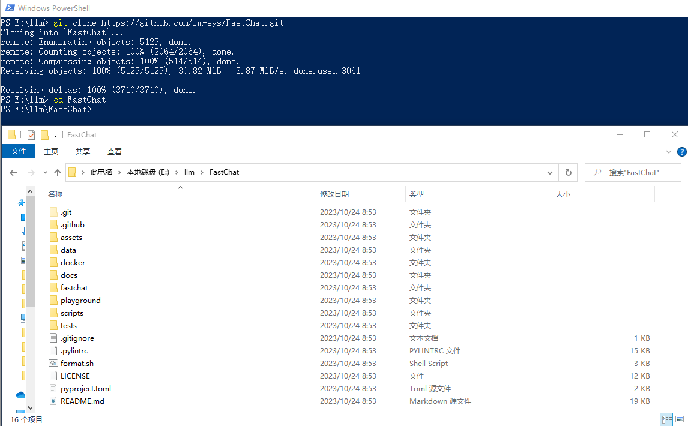
# 注意：如果你是 git clone 的项目，之后请进入项目目录在执行下面的命令
python -m venv venv
.\venv\scripts\activate
# 下面不是必须的，总是遇到pip升级的问题，在这里记录一下
pip list
E:\llm\FastChat\venv\Scripts\python.exe -m pip install --upgrade pip
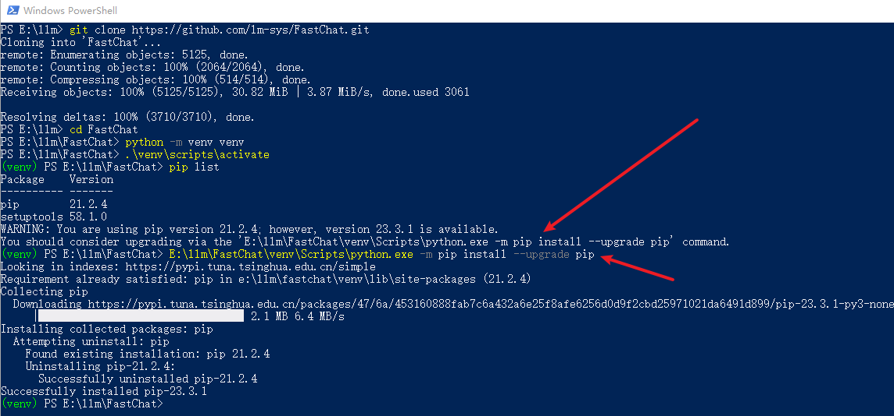
项目中没有
pip install -e ".[model_worker,webui]"
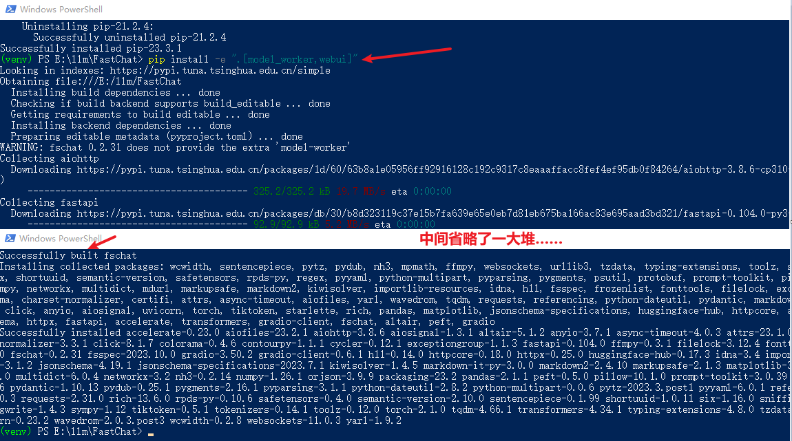
大佬已到位。他支持的模型也不少啊！
python -m fastchat.serve.cli --model-path D:\llm\THUDM\chatglm2-6b-int4
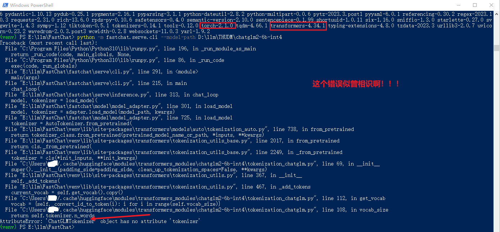
这个问题真是太熟悉了，不长记性啊！
pip install transformers==4.30.2
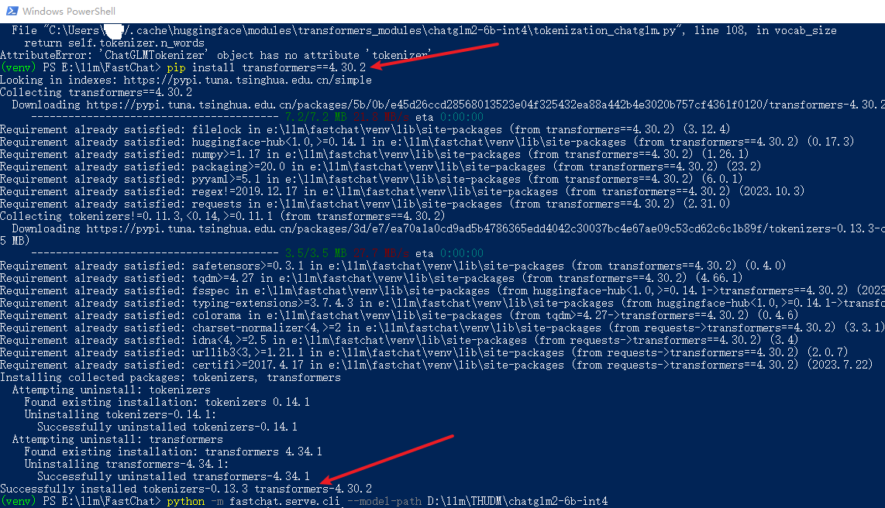
真是一步一个坎啊！
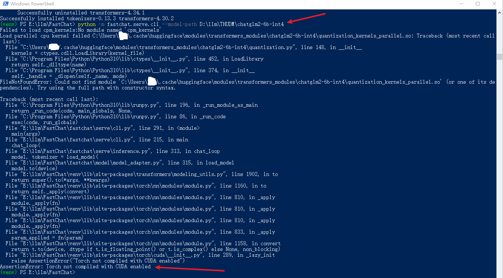
python -m fastchat.serve.cli --model-path D:\llm\THUDM\chatglm2-6b-int4 --device cpu
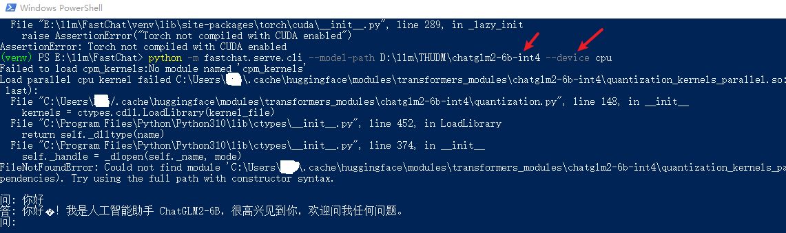
官网介绍（翻译之后的）：FastChat为其支持的模型提供了与OpenAI兼容的api，因此您可以使用FastChat作为OpenAI api的本地替代品。
# 参考：https://github.com/lm-sys/FastChat/blob/main/docs/openai_api.md
# https://github.com/openai/openai-python
# 目前没有测试怎么在同一个命令行执行（有时间研究一下……），这里开了三个窗口
python -m fastchat.serve.controller
python -m fastchat.serve.model_worker --model-path D:\llm\THUDM\chatglm2-6b-int4 --device cpu
python -m fastchat.serve.openai_api_server --host localhost --port 8899
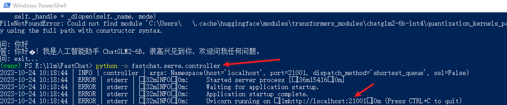
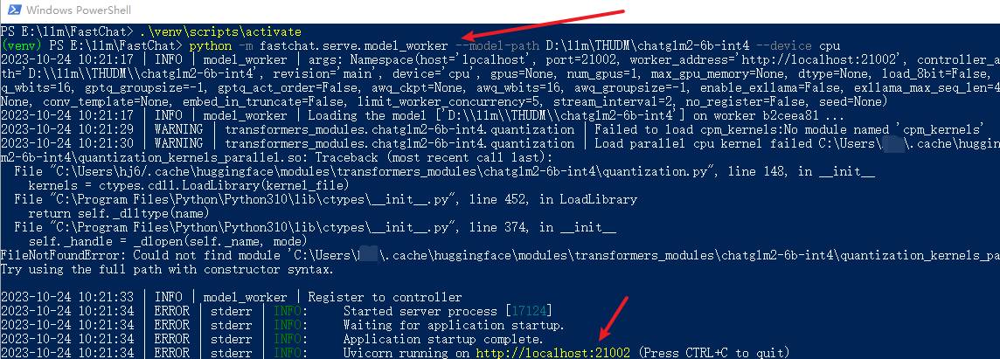
终于启动完了，赶紧试试吧
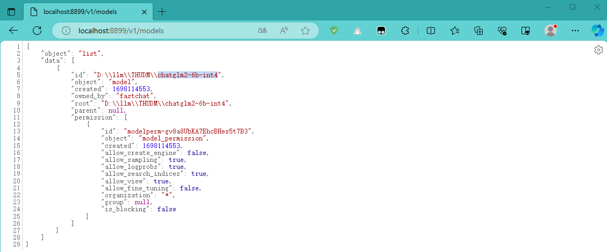
下面我们用
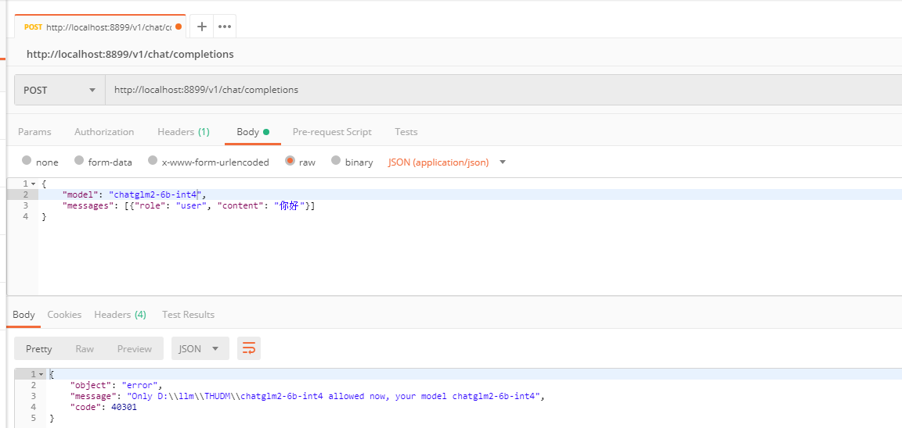
大语言模型还得指定绝对路径，这个“挺好”，得紧急处理一下啊！要不然……后面再说吧，新先看效果：
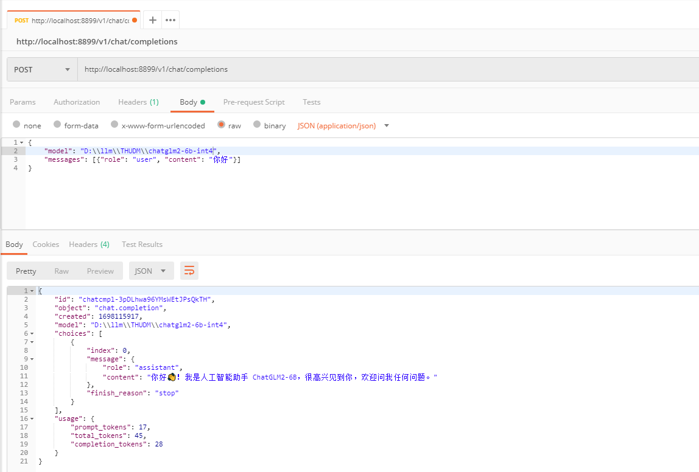
既然与OpenAI的api兼容，那么咱必须得试试，你说是吧。这里创建了一个简单Python项目：一个是
import openai
def openai_chat():
openai.api_key = "EMPTY"
openai.api_base = "http://localhost:8899/v1"
try:
completion = openai.ChatCompletion.create(
model="D:\llm\THUDM\chatglm2-6b-int4", messages=[{"role": "user", "content": "你好"}])
if completion.choices:
answer = completion.choices[0].message.content
print(answer)
except Exception as e:
print(f"获取ChatCompletion时出错：{e}")
if __name__ == "__main__":
openai_chat()
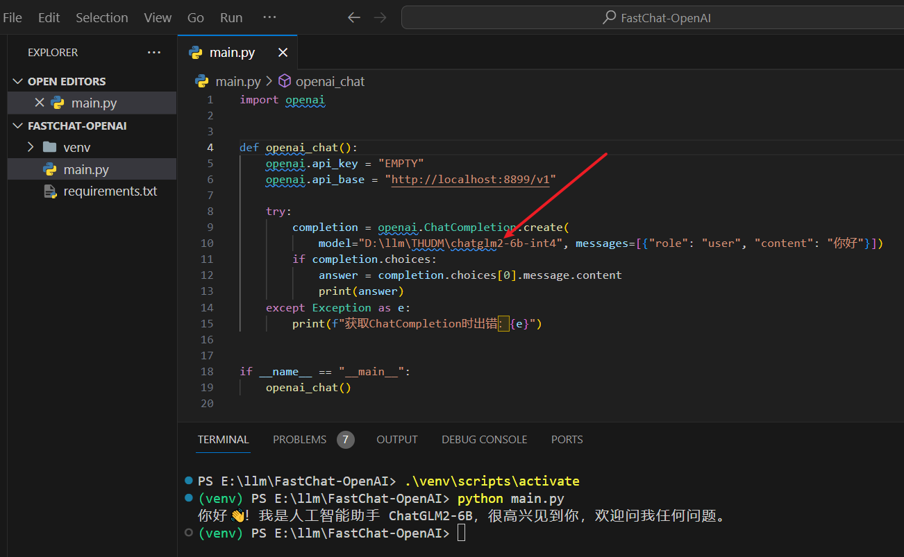